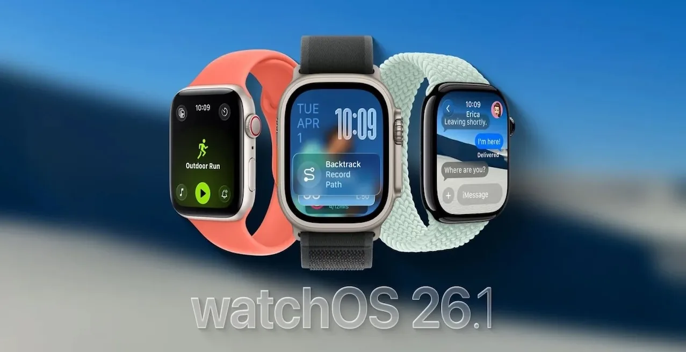

Apple, Apple Watch kullanıcıları için yeni bir yazılım sürümü yayınladı. watchOS 26.1 güncellemesi Eylül ayında yayımlanan büyük 26.0 sürümünün ardından geldi ve sistem genelinde performans, pil verimliliği ve hata düzeltmeleri odaklı iyileştirmeler içeriyor. Güncelleme, 26.1 serisinin bir parçası olarak iPhone, iPad, Mac, TV ve HomePod cihazlarında da eş zamanlı olarak dağıtılmaya başlandı.
Apple, watchOS 26.1 sürüm notlarında “Bu güncelleme iyileştirmeler ve hata düzeltmeleri içerir” ifadesine yer verdi. Detay paylaşılmasa da raporlara göre özellikle aktivite takibi, bildirim senkronizasyonu ve egzersiz uygulamalarındaki gecikme sorunları bu sürümle birlikte giderildi. Ayrıca pil tüketiminde belirgin bir optimizasyon sağlandı ve Watch arayüzünde geçiş animasyonları daha akıcı hale getirildi.
WatchOS 26.1, Apple’ın Eylül ayında tanıttığı watchOS 26.0’daki yenilikleri daha kararlı hale getiriyor. İlk sürümde bazı kullanıcılar arayüz gecikmeleri ve sensör verilerinde eşzamanlama hatalarıyla karşılaşmıştı. Yeni sürüm bu sorunların tamamına yakınının düzeltildiği kararlı bir yapı sunuyor.
Apple Watch’un çekirdek sisteminde yapılan değişiklikler, Apple Health ve Fitness+ hizmetleriyle veri alışverişinin daha güvenli hale gelmesini sağladı. Aynı zamanda Bluetooth bağlantılarındaki kararlılık artırıldı. Özellikle üçüncü parti uygulamalardan bildirim alan kullanıcıların, senkronizasyon hatalarında azalma yaşayacağı bildiriliyor.
Sızıntılara göre güncelleme ilerleyen dönemde sunulacak Apple Intelligence tabanlı sağlık özellikleri için de teknik altyapı hazırlıklarını içeriyor. Ancak Apple bu konuda henüz resmi bir açıklama yapmadı.
WatchOS 26.1, Apple’ın güvenlik odaklı geniş 26.1 güncelleme paketinin bir parçası. Aynı gün içinde iOS 26.1, iPadOS 26.1, macOS Tahoe 26.1, tvOS 26.1, visionOS 26.1 ve HomePod 26.1 sürümleri de yayımlandı. Bu sürümlerle birlikte Apple ekosisteminde daha kararlı ve uyumlu bir yazılım deneyimi sunuluyor.
Apple Watch kullanıcıları güncellemeyi iPhone üzerindeki Watch > Genel > Yazılım Güncelleme menüsü üzerinden kablosuz olarak yükleyebiliyor. Şirket, tüm kullanıcıların bu sürüme geçmesini öneriyor çünkü 26.1 güncellemesi yalnızca performans artışı değil, aynı zamanda sistem güvenliği için kritik düzeltmeler içeriyor.